Expand Code
# Load required packages
library(tidyverse)
library(here)
library(janitor)
library(patchwork)# Load required packages
library(tidyverse)
library(here)
library(janitor)
library(patchwork)Goal: To understand how hurricanes affecting Florida have changed over time:
# Import hurricane data
hurricane_data <- read_csv(here("data", "Hurricane Data.csv")) %>%
clean_names()
# Filter for Florida hurricanes
florida_hurricanes <- hurricane_data %>%
filter((str_detect(affected_areas, "Florida"))) %>%
mutate(damage_mil = damage_usd/1000000)# Cost of damage by category
ggplot(florida_hurricanes, aes(x = factor(category, levels = c("TS", "Category 1", "Category 2", "Category 3", "Category 4", "Category 5"), labels = c("TS", "1", "2", "3", "4", "5")), y = damage_mil)) +
geom_boxplot() +
labs(x = "Catetory",
y = "Damage (Millions of USD)",
title = "Storm Damage by Category") +
theme_minimal()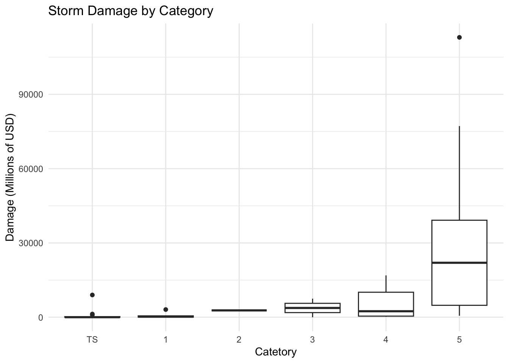
Relevant sample statistic: regression coefficient (Beta1)
normal <- ggplot(florida_hurricanes, aes(x = highest_wind_speed, y = damage_mil)) +
geom_point() +
labs(x = "Max Wind Speed (mph)",
y = "Damage (Millions of USD)",
title = "Storm Damage by Wind") +
geom_smooth(method = "lm", se = FALSE, linewidth = 1.5) +
theme_minimal()
# Linear regression
wind_model <- lm(damage_mil ~ highest_wind_speed, data = florida_hurricanes)
summary(wind_model)
Call:
lm(formula = damage_mil ~ highest_wind_speed, data = florida_hurricanes)
Residuals:
Min 1Q Median 3Q Max
-27939 -6525 -1227 3259 86588
Coefficients:
Estimate Std. Error t value Pr(>|t|)
(Intercept) -16001.99 6198.81 -2.581 0.013331 *
highest_wind_speed 265.09 63.91 4.148 0.000155 ***
---
Signif. codes: 0 '***' 0.001 '**' 0.01 '*' 0.05 '.' 0.1 ' ' 1
Residual standard error: 17590 on 43 degrees of freedom
(4 observations deleted due to missingness)
Multiple R-squared: 0.2858, Adjusted R-squared: 0.2692
F-statistic: 17.2 on 1 and 43 DF, p-value: 0.0001552# Distribution of Beta1
beta1_estimate <- summary(wind_model)$coefficients[2, 1]
beta1_se <- summary(wind_model)$coefficients[2, 2]
tibble(beta1 = seq(-(beta1_estimate + beta1_se),
beta1_estimate + beta1_se,
length.out = 200),
density = dnorm(beta1, mean = 0, sd = beta1_se)) %>%
ggplot(aes(beta1, density)) +
geom_line(color = "cornflowerblue") +
geom_vline(xintercept = beta1_estimate, color = "firebrick")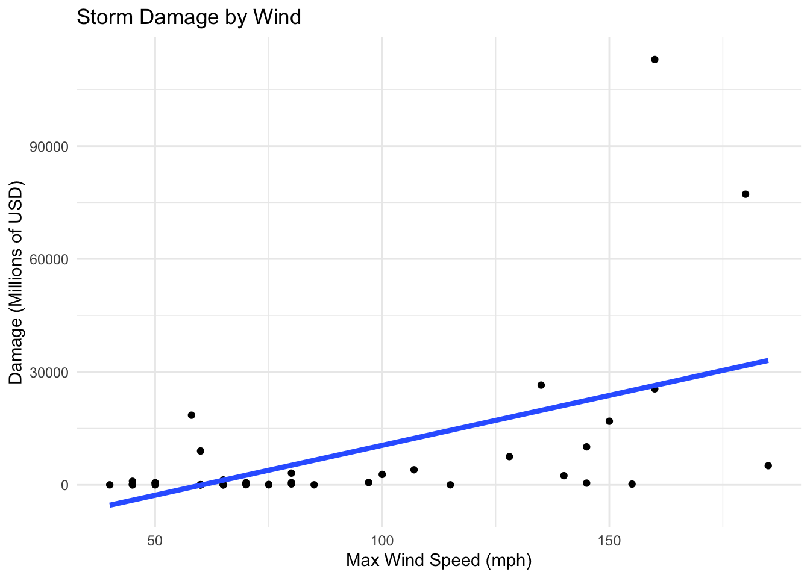
# p-value
pval_wind <- 2 * pnorm(-abs(beta1_estimate), mean = 0, sd = beta1_se)
print(paste0("The p-value is: ", pval_wind, "."))[1] "The p-value is: 3.35738637709473e-05."The p-value is much less than 0.05, so we reject the null hypothesis. There is a very, very small chance that the relationship between wind and damage is due to chance. Therefore, the wind likely influences the total cost of damage.
log <- ggplot(florida_hurricanes, aes(x = highest_wind_speed, y = log(damage_mil))) +
geom_point() +
labs(x = "Max Wind Speed (mph)",
y = "Log Damage (Millions of USD)",
title = "Log Storm Damage by Wind") +
geom_smooth(method = "lm", se = FALSE, linewidth = 1.5) +
theme_minimal()
log_wind_model <- lm(log(damage_mil) ~ highest_wind_speed, data = florida_hurricanes)
summary(log_wind_model)
Call:
lm(formula = log(damage_mil) ~ highest_wind_speed, data = florida_hurricanes)
Residuals:
Min 1Q Median 3Q Max
-7.9506 -2.9683 0.7693 2.4246 6.9114
Coefficients:
Estimate Std. Error t value Pr(>|t|)
(Intercept) -0.65961 1.22200 -0.540 0.592
highest_wind_speed 0.06162 0.01260 4.891 1.45e-05 ***
---
Signif. codes: 0 '***' 0.001 '**' 0.01 '*' 0.05 '.' 0.1 ' ' 1
Residual standard error: 3.467 on 43 degrees of freedom
(4 observations deleted due to missingness)
Multiple R-squared: 0.3574, Adjusted R-squared: 0.3425
F-statistic: 23.92 on 1 and 43 DF, p-value: 1.448e-05print(paste("The R2 for log(damage)~wind is", round(summary(log_wind_model)$r.squared, 2)))[1] "The R2 for log(damage)~wind is 0.36"Compare the plots:
normal + log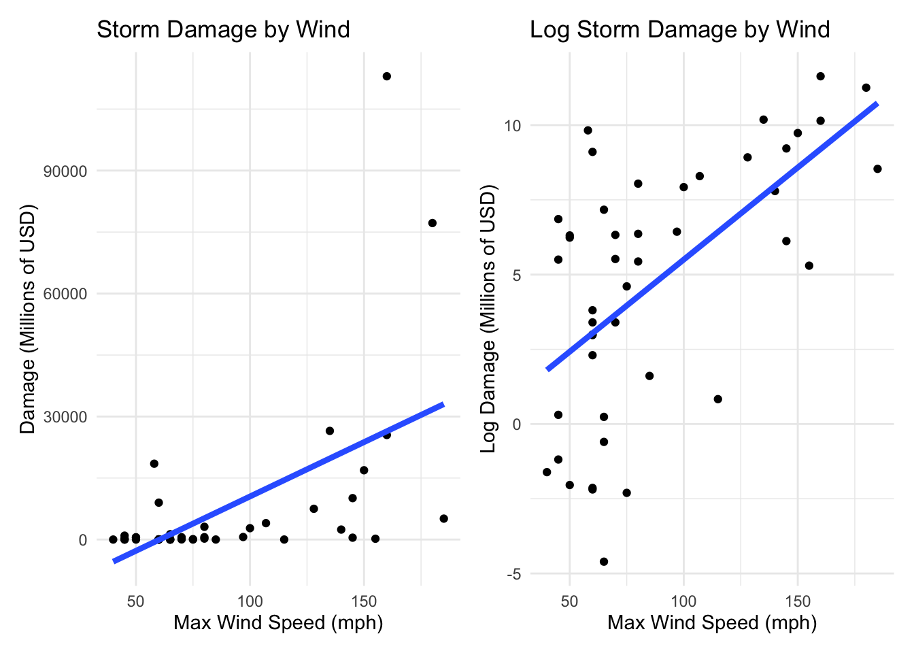
Simulate population:
# Extract our estimates for beta0, beta1, and sigma
beta0_estimate <- summary(wind_model)$coefficients[1,1]
beta1_estimate <- summary(wind_model)$coefficients[2,1]
sigma <- summary(wind_model)$sigma
# Simulate the population
wind_damage_pop <- tibble(
# Predictor (uniformly distributed)
highest_wind_speed = runif(1e4,
min(florida_hurricanes$highest_wind_speed),
max(florida_hurricanes$highest_wind_speed)),
# Mean response
mean_damage = beta0_estimate + beta1_estimate * highest_wind_speed,
# Simulated response (mean and standard deviation accounted for)
damage_usd = rnorm(1e4, mean = mean_damage, sd = sigma)
)
# Visualize
ggplot(wind_damage_pop, aes(highest_wind_speed, damage_usd)) +
geom_point(shape = 21) +
labs(x = "Max Wind Speed (mph)",
y = "Damage (Millions of USD)") +
theme_minimal()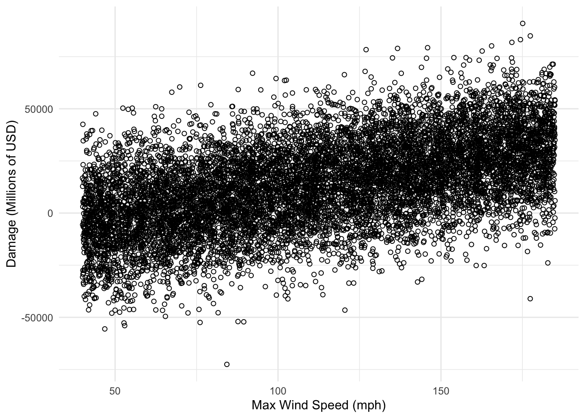
summary(lm(damage_usd ~ highest_wind_speed, wind_damage_pop))
Call:
lm(formula = damage_usd ~ highest_wind_speed, data = wind_damage_pop)
Residuals:
Min 1Q Median 3Q Max
-65741 -11748 166 11714 70054
Coefficients:
Estimate Std. Error t value Pr(>|t|)
(Intercept) -16345.814 500.388 -32.67 <2e-16 ***
highest_wind_speed 267.246 4.155 64.32 <2e-16 ***
---
Signif. codes: 0 '***' 0.001 '**' 0.01 '*' 0.05 '.' 0.1 ' ' 1
Residual standard error: 17510 on 9998 degrees of freedom
Multiple R-squared: 0.2927, Adjusted R-squared: 0.2926
F-statistic: 4137 on 1 and 9998 DF, p-value: < 2.2e-16Create confidence interval:
# Draw a sample
wind_damage_sample <- sample_n(wind_damage_pop, 21)
# Calculate the point estimate and standard error
sample_lm <- lm(damage_usd ~ highest_wind_speed, wind_damage_pop)
pe <- summary(sample_lm)$coefficients[2, 1]
se <- summary(sample_lm)$coefficients[2, 2]
# Construct the confidence interval
sample_ci <- c(point_estimate = pe,
ci95_lower = pe - 1.96 * se,
ci95_upper = pe + 1.96 * se)
sample_cipoint_estimate ci95_lower ci95_upper
267.2457 259.1022 275.3892 print(paste("With 95% certainty, the wind coefficient would \nfall in the interval:", sample_ci[2], "to", sample_ci[3]))[1] "With 95% certainty, the wind coefficient would \nfall in the interval: 259.102241021694 to 275.389166832136"Relevant sample statistic: regression coefficient (Beta1?)
normal <- ggplot(florida_hurricanes, aes(x = rain_inch, y = damage_mil)) +
geom_point() +
labs(x = "Rainfall (in)",
y = "Damage (Millions of USD)",
title = "Storm Damage by Rainfall") +
geom_smooth(method = "lm", se = FALSE, linewidth = 1.5) +
theme_minimal()log <- ggplot(florida_hurricanes, aes(x = rain_inch, y = log(damage_mil))) +
geom_point() +
labs(x = "Rainfall (in))",
y = "Log Damage (Millions of USD)",
title = "Log Storm Damage by Rainfall") +
geom_smooth(method = "lm", se = FALSE, linewidth = 1.5) +
theme_minimal()
log_rain_model <- lm(log(damage_mil) ~ rain_inch, data = florida_hurricanes)
summary(log_rain_model)
Call:
lm(formula = log(damage_mil) ~ rain_inch, data = florida_hurricanes)
Residuals:
Min 1Q Median 3Q Max
-7.7419 -2.5840 -0.0833 2.6313 6.9102
Coefficients:
Estimate Std. Error t value Pr(>|t|)
(Intercept) 1.75274 0.91818 1.909 0.062960 .
rain_inch 0.23066 0.05661 4.075 0.000195 ***
---
Signif. codes: 0 '***' 0.001 '**' 0.01 '*' 0.05 '.' 0.1 ' ' 1
Residual standard error: 3.674 on 43 degrees of freedom
(4 observations deleted due to missingness)
Multiple R-squared: 0.2786, Adjusted R-squared: 0.2618
F-statistic: 16.6 on 1 and 43 DF, p-value: 0.0001946print(paste("The R2 for log(damage)~rain is", round(summary(log_rain_model)$r.squared, 2)))[1] "The R2 for log(damage)~rain is 0.28"Plot the data:
normal + log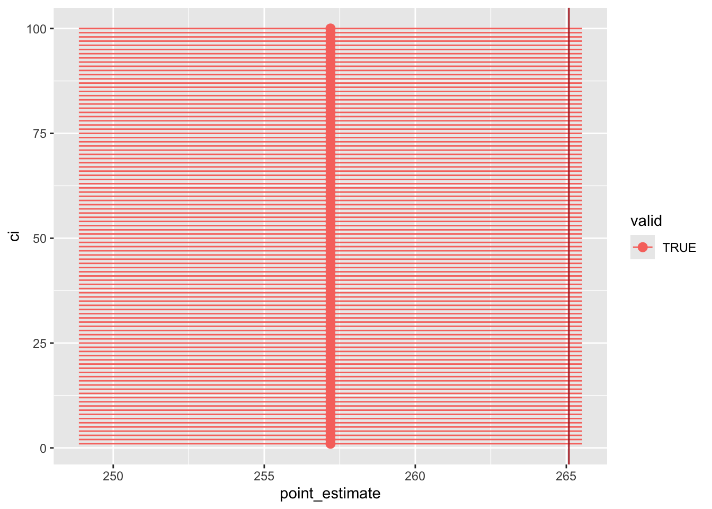
Linear regression:
rain_model <- lm(damage_mil ~ rain_inch, data = florida_hurricanes)
summary(rain_model)
Call:
lm(formula = damage_mil ~ rain_inch, data = florida_hurricanes)
Residuals:
Min 1Q Median 3Q Max
-23936 -8452 -3319 -816 93381
Coefficients:
Estimate Std. Error t value Pr(>|t|)
(Intercept) -1375.1 4933.5 -0.279 0.782
rain_inch 666.0 304.2 2.190 0.034 *
---
Signif. codes: 0 '***' 0.001 '**' 0.01 '*' 0.05 '.' 0.1 ' ' 1
Residual standard error: 19740 on 43 degrees of freedom
(4 observations deleted due to missingness)
Multiple R-squared: 0.1003, Adjusted R-squared: 0.07941
F-statistic: 4.795 on 1 and 43 DF, p-value: 0.03401Visualize the distribution of the regression coefficient (Beta1?) under the null hypothesis:
beta1_estimate <- summary(rain_model)$coefficients[2, 1]
beta1_se <- summary(rain_model)$coefficients[2, 2]
tibble(beta1 = seq(-(beta1_estimate + beta1_se),
beta1_estimate + beta1_se,
length.out = 200),
density = dnorm(beta1, mean = 0, sd = beta1_se)) %>%
ggplot(aes(beta1, density)) +
geom_line(color = "cornflowerblue") +
geom_vline(xintercept = beta1_estimate, color = "firebrick")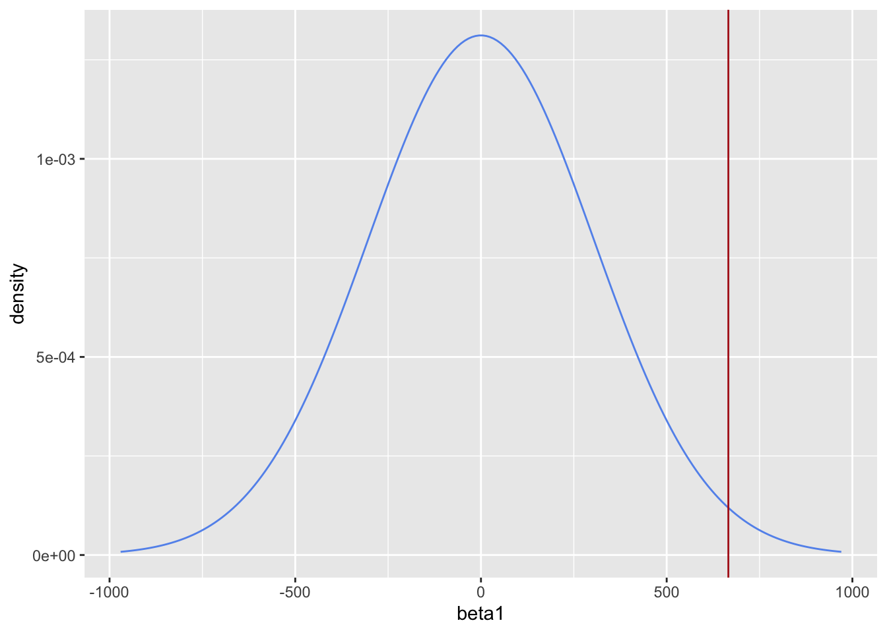
p-value:
pval_rain <- 2 * pnorm(-abs(beta1_estimate), mean = 0, sd = beta1_se)
print(paste("The p-value is:", pval_rain))[1] "The p-value is: 0.0285385487677372"The p-value is less than 0.05 (but not by much), so we reject the null hypothesis. There is a small chance (the p-value?) that the relationship is due to chance. Therefore, there is rain likely has an effect on the total cost of damage.
Remove outliers?
Simulate population:
# Simulate the population
# Extract our estimates for beta0, beta1, and sigma (i.e., the SD of the data
# around the mean response)
beta0_estimate <- summary(rain_model)$coefficients[1,1]
beta1_estimate <- summary(rain_model)$coefficients[2,1]
sigma <- summary(rain_model)$sigma
rain_damage_pop <- tibble(
# Predictor (uniformly distributed)
rain_inch = runif(1e4,
min(florida_hurricanes$rain_inch),
max(florida_hurricanes$rain_inch)),
# Mean response
mean_damage = beta0_estimate + beta1_estimate * rain_inch,
# Simulated response (mean and standard deviation accounted for)
damage_usd = rnorm(1e4, mean = mean_damage, sd = sigma)
)
# Visualize
ggplot(rain_damage_pop, aes(rain_inch, damage_usd)) +
geom_point(shape = 21) +
labs(x = "Rainfall (in)",
y = "Damage (Millions of USD)") +
theme_minimal()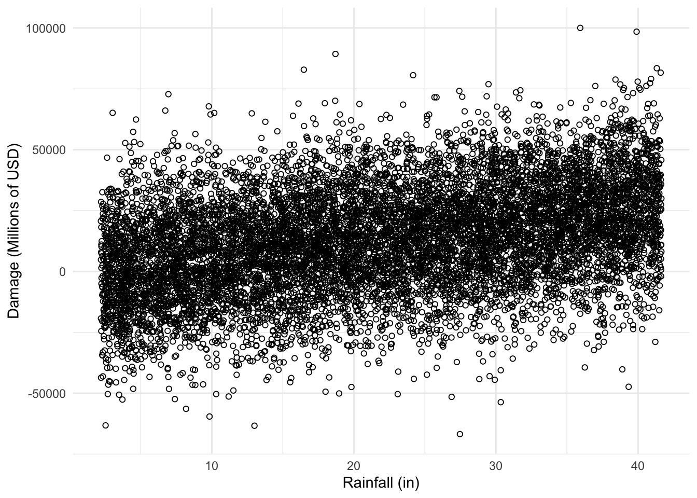
summary(lm(damage_usd ~ rain_inch, rain_damage_pop))
Call:
lm(formula = damage_usd ~ rain_inch, data = rain_damage_pop)
Residuals:
Min 1Q Median 3Q Max
-77857 -13259 -35 13290 86246
Coefficients:
Estimate Std. Error t value Pr(>|t|)
(Intercept) -1649.3 426.7 -3.865 0.000112 ***
rain_inch 688.7 17.4 39.593 < 2e-16 ***
---
Signif. codes: 0 '***' 0.001 '**' 0.01 '*' 0.05 '.' 0.1 ' ' 1
Residual standard error: 19860 on 9998 degrees of freedom
Multiple R-squared: 0.1355, Adjusted R-squared: 0.1355
F-statistic: 1568 on 1 and 9998 DF, p-value: < 2.2e-16Create confidence interval:
# Draw a sample
rain_damage_sample <- sample_n(rain_damage_pop, 21)
# Calculate the point estimate and standard error
sample_lm <- lm(damage_usd ~ rain_inch, rain_damage_pop)
pe <- summary(sample_lm)$coefficients[2, 1]
se <- summary(sample_lm)$coefficients[2, 2]
# Construct the confidence interval
sample_ci <- c(point_estimate = pe,
ci95_lower = pe - 1.96 * se,
ci95_upper = pe + 1.96 * se)
sample_cipoint_estimate ci95_lower ci95_upper
688.7423 654.6472 722.8375 print(paste("With 95% certainty, the rainfall coefficient would fall in the interval:", sample_ci[2], "to", sample_ci[3]))[1] "With 95% certainty, the rainfall coefficient would fall in the interval: 654.647190598291 to 722.837494949788"How many 95% CIs contain the parameter?
repeat_ci <- replicate(100, {
rain_damage_sample <- sample_n(rain_damage_pop, 21)
sample_lm <- lm(damage_usd ~ rain_inch, rain_damage_pop)
pe <- summary(sample_lm)$coefficients[2, 1]
se <- summary(sample_lm)$coefficients[2, 2]
sample_ci <- c(point_estimate = pe,
ci95_lower = pe - 1.96 * se,
ci95_upper = pe + 1.96 * se)
sample_ci
})
tibble(point_estimate = repeat_ci[1, ],
ci95_lower = repeat_ci[2, ],
ci95_upper = repeat_ci[3, ],
ci = 1:100) %>%
mutate(valid = beta1_estimate >= ci95_lower &
beta1_estimate <= ci95_upper) %>%
ggplot() +
geom_pointrange(aes(x = point_estimate,
xmin = ci95_lower,
xmax = ci95_upper,
y = ci,
color = valid)) +
geom_vline(xintercept = beta1_estimate, color = "firebrick")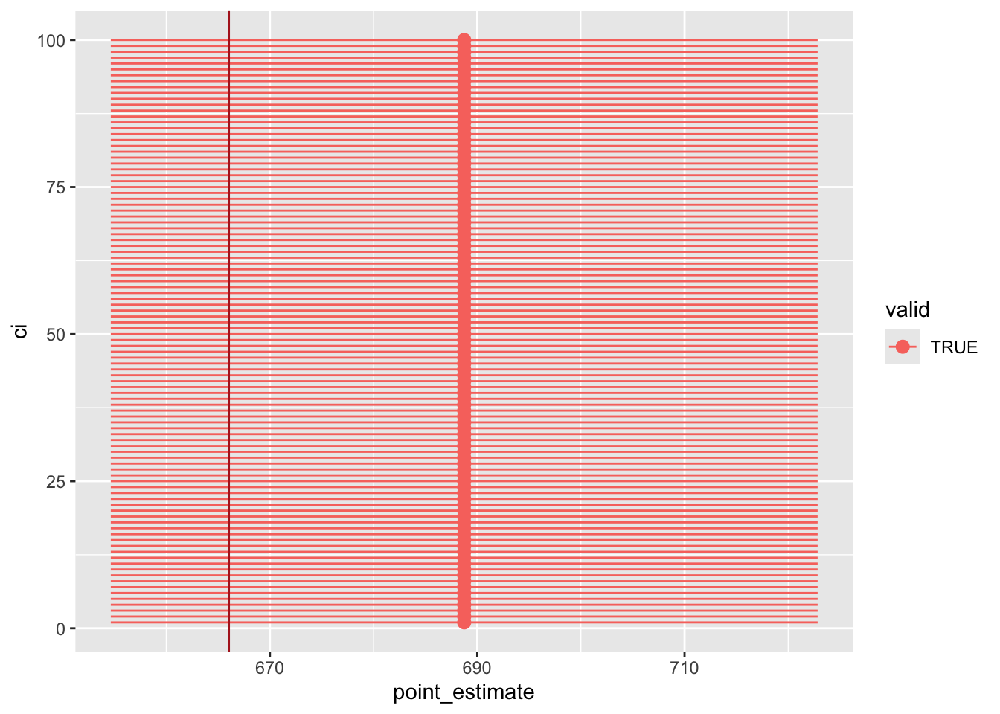
Is this correct? ^
# Multiple linear regression
combined_model <- lm(damage_mil ~ highest_wind_speed + rain_inch + category, data = florida_hurricanes)
summary(combined_model)
Call:
lm(formula = damage_mil ~ highest_wind_speed + rain_inch + category,
data = florida_hurricanes)
Residuals:
Min 1Q Median 3Q Max
-44191 -3663 -269 3089 65118
Coefficients:
Estimate Std. Error t value Pr(>|t|)
(Intercept) -28658.7 11126.6 -2.576 0.0141 *
highest_wind_speed 320.3 121.7 2.631 0.0123 *
rain_inch 404.6 250.2 1.617 0.1144
categoryCategory 2 -4239.0 17083.2 -0.248 0.8054
categoryCategory 3 -12117.9 13781.0 -0.879 0.3849
categoryCategory 4 -19142.7 12667.9 -1.511 0.1393
categoryCategory 5 12546.6 10918.6 1.149 0.2579
categoryTS 6277.9 7125.9 0.881 0.3840
---
Signif. codes: 0 '***' 0.001 '**' 0.01 '*' 0.05 '.' 0.1 ' ' 1
Residual standard error: 15680 on 37 degrees of freedom
(4 observations deleted due to missingness)
Multiple R-squared: 0.5115, Adjusted R-squared: 0.4191
F-statistic: 5.535 on 7 and 37 DF, p-value: 0.0002056print(paste("The R2 for damage~wind+rain is", round(summary(combined_model)$adj.r.squared, 2)))[1] "The R2 for damage~wind+rain is 0.42"# Log damage by rain speed
ggplot(florida_hurricanes, aes(x = rain_inch,
y = log(damage_mil),
)) +
geom_point() +
labs(x = "Rainfall (in)",
y = "Log Damage (Millions of USD)",
title = "Log Damage by Rainfall",
) +
geom_smooth(method = "lm", se = FALSE, linewidth = 1.5) +
theme_minimal()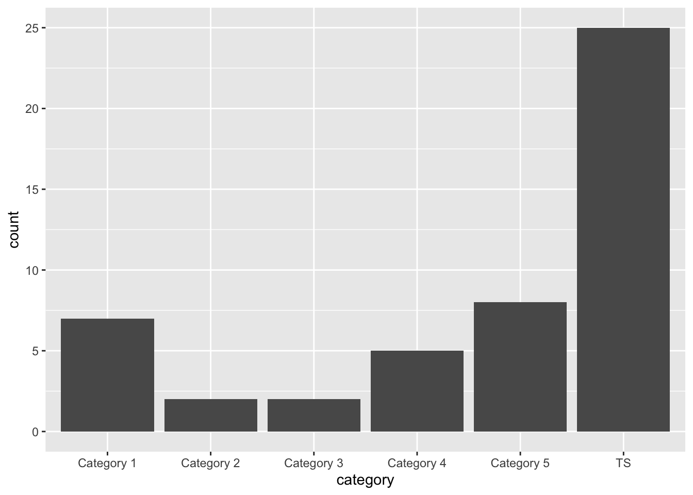
log_rain_model <- lm(log(damage_mil) ~ rain_inch, data = florida_hurricanes)
summary(log_rain_model)
Call:
lm(formula = log(damage_mil) ~ rain_inch, data = florida_hurricanes)
Residuals:
Min 1Q Median 3Q Max
-7.7419 -2.5840 -0.0833 2.6313 6.9102
Coefficients:
Estimate Std. Error t value Pr(>|t|)
(Intercept) 1.75274 0.91818 1.909 0.062960 .
rain_inch 0.23066 0.05661 4.075 0.000195 ***
---
Signif. codes: 0 '***' 0.001 '**' 0.01 '*' 0.05 '.' 0.1 ' ' 1
Residual standard error: 3.674 on 43 degrees of freedom
(4 observations deleted due to missingness)
Multiple R-squared: 0.2786, Adjusted R-squared: 0.2618
F-statistic: 16.6 on 1 and 43 DF, p-value: 0.0001946print(paste("The R2 for log(damage)~wind is", round(summary(log_rain_model)$r.squared, 2)))[1] "The R2 for log(damage)~wind is 0.28"# Cost of damage by wind speed
ggplot(florida_hurricanes, aes(x = highest_wind_speed,
y = log(damage_mil),
size = factor(category, levels = c("TS", "Category 1", "Category 2", "Category 3", "Category 4", "Category 5"), labels = c("TS", "1", "2", "3", "4", "5")),
color = factor(category, levels = c("TS", "Category 1", "Category 2", "Category 3", "Category 4", "Category 5"), labels = c("TS", "1", "2", "3", "4", "5"))
)) +
geom_point() +
labs(x = "Max Wind Speed (mph)",
y = "Damage (Millions of USD)",
title = "Damage vs. Max Wind Speed",
size = "Category",
color = "Category") +
geom_smooth(method = "lm", se = FALSE, linewidth = 1.5) +
scale_color_brewer(palette = "Reds") +
theme_minimal()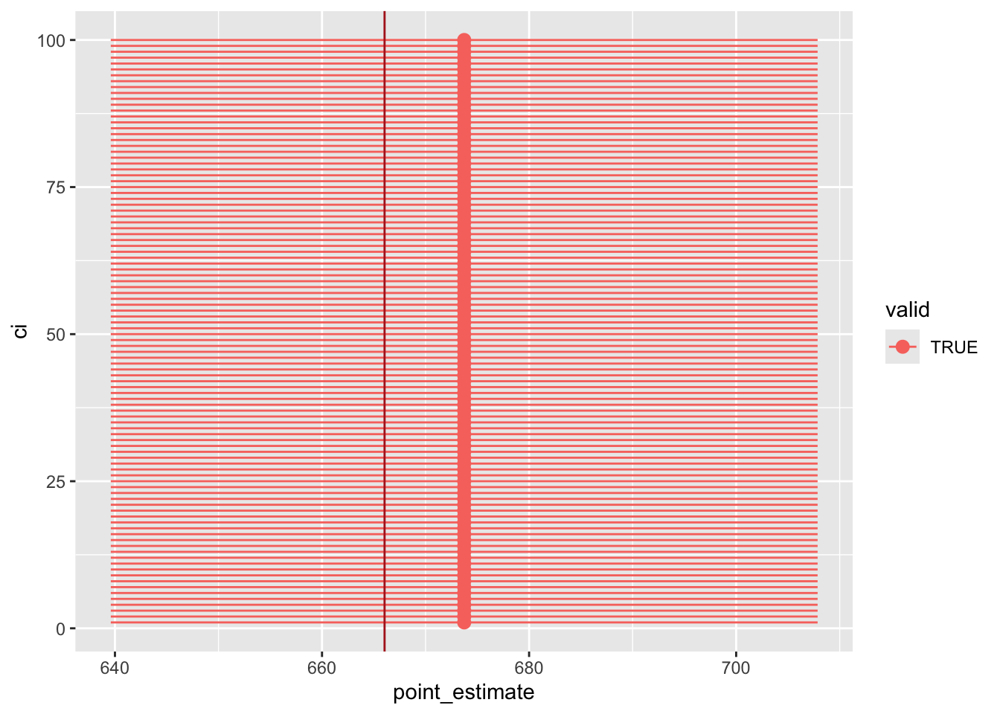
# Linear regression
wind_model <- lm(damage_mil ~ highest_wind_speed, data = florida_hurricanes)
summary(wind_model)
Call:
lm(formula = damage_mil ~ highest_wind_speed, data = florida_hurricanes)
Residuals:
Min 1Q Median 3Q Max
-27939 -6525 -1227 3259 86588
Coefficients:
Estimate Std. Error t value Pr(>|t|)
(Intercept) -16001.99 6198.81 -2.581 0.013331 *
highest_wind_speed 265.09 63.91 4.148 0.000155 ***
---
Signif. codes: 0 '***' 0.001 '**' 0.01 '*' 0.05 '.' 0.1 ' ' 1
Residual standard error: 17590 on 43 degrees of freedom
(4 observations deleted due to missingness)
Multiple R-squared: 0.2858, Adjusted R-squared: 0.2692
F-statistic: 17.2 on 1 and 43 DF, p-value: 0.0001552print(paste("The R2 for damage~wind is", round(summary(wind_model)$r.squared, 2)))[1] "The R2 for damage~wind is 0.29"H0: Max wind speed is not a better predictor for damage costs than rainfall. HA: Max wind speed is a better predictor for damage costs than rainfall.
# Cost of damage by rainfall
ggplot(florida_hurricanes, aes(x = rain_inch, y = log(damage_mil), size = factor(category, levels = c("TS", "Category 1", "Category 2", "Category 3", "Category 4", "Category 5"), labels = c("TS", "1", "2", "3", "4", "5")), color = factor(category, levels = c("TS", "Category 1", "Category 2", "Category 3", "Category 4", "Category 5"), labels = c("TS", "1", "2", "3", "4", "5")))) +
geom_point() +
labs(x = "Rainfall (in)",
y = "Damage (Millions of USD)",
title = "Damage vs. Rainfall",
size = "Category",
color = "Category") +
geom_smooth(method = "lm", se = FALSE, linewidth = 1.5) +
#scale_color_manual(values = c("red", "orange", "yellow", "green", "blue", "purple")) +
scale_color_brewer(palette = "Reds") +
theme_minimal()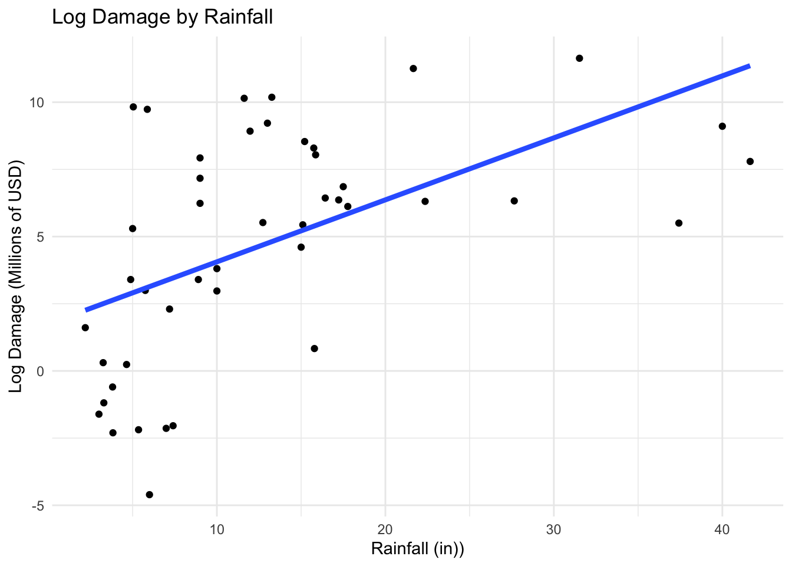
ggplot(hurricane_data, aes(x = rain_inch, y = log(damage_usd), size = factor(category, levels = c("TS", "Category 1", "Category 2", "Category 3", "Category 4", "Category 5"), labels = c("TS", "1", "2", "3", "4", "5")), color = factor(category, levels = c("TS", "Category 1", "Category 2", "Category 3", "Category 4", "Category 5"), labels = c("TS", "1", "2", "3", "4", "5")))) +
geom_point() +
labs(x = "Rainfall (in)",
y = "Damage (Millions of USD)",
title = "Damage vs. Rainfall",
size = "Category",
color = "Category") +
geom_smooth(method = "lm", se = FALSE, linewidth = 1.5) +
#scale_color_manual(values = c("red", "orange", "yellow", "green", "blue", "purple")) +
scale_color_brewer(palette = "Reds") +
theme_minimal()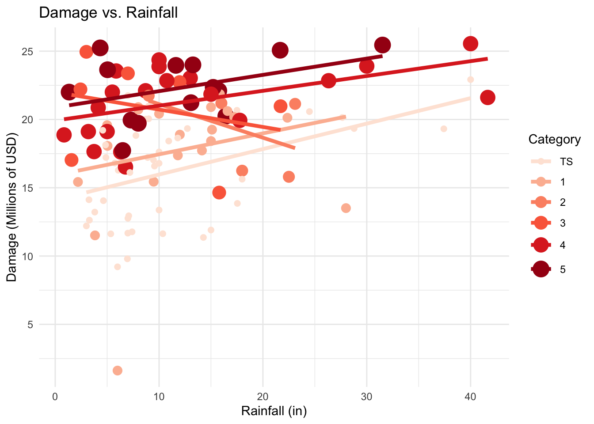
# Linear regression
rain_model <- lm(damage_mil ~ rain_inch, data = florida_hurricanes)
summary(rain_model)
Call:
lm(formula = damage_mil ~ rain_inch, data = florida_hurricanes)
Residuals:
Min 1Q Median 3Q Max
-23936 -8452 -3319 -816 93381
Coefficients:
Estimate Std. Error t value Pr(>|t|)
(Intercept) -1375.1 4933.5 -0.279 0.782
rain_inch 666.0 304.2 2.190 0.034 *
---
Signif. codes: 0 '***' 0.001 '**' 0.01 '*' 0.05 '.' 0.1 ' ' 1
Residual standard error: 19740 on 43 degrees of freedom
(4 observations deleted due to missingness)
Multiple R-squared: 0.1003, Adjusted R-squared: 0.07941
F-statistic: 4.795 on 1 and 43 DF, p-value: 0.03401print(paste("The R2 for damage~rain is", round(summary(rain_model)$r.squared, 2)))[1] "The R2 for damage~rain is 0.1"# Damage vs. fatalities
ggplot(florida_hurricanes, aes(x = damage_mil,
y = fatalities,
size = factor(category, levels = c("TS", "Category 1", "Category 2", "Category 3", "Category 4", "Category 5"), labels = c("TS", "1", "2", "3", "4", "5")),
color = factor(category, levels = c("TS", "Category 1", "Category 2", "Category 3", "Category 4", "Category 5"), labels = c("TS", "1", "2", "3", "4", "5"))
)) +
geom_point() +
labs(x = "Damage (Millions of USD)",
y = "Fatalities",
title = "Fatalities vs. Damage",
size = "Category",
color = "Category") +
geom_smooth(method = "lm", se = FALSE, linewidth = 1.5) +
#scale_color_manual(values = c("red", "orange", "yellow", "green", "blue", "purple")) +
scale_color_brewer(palette = "Reds") +
theme_minimal()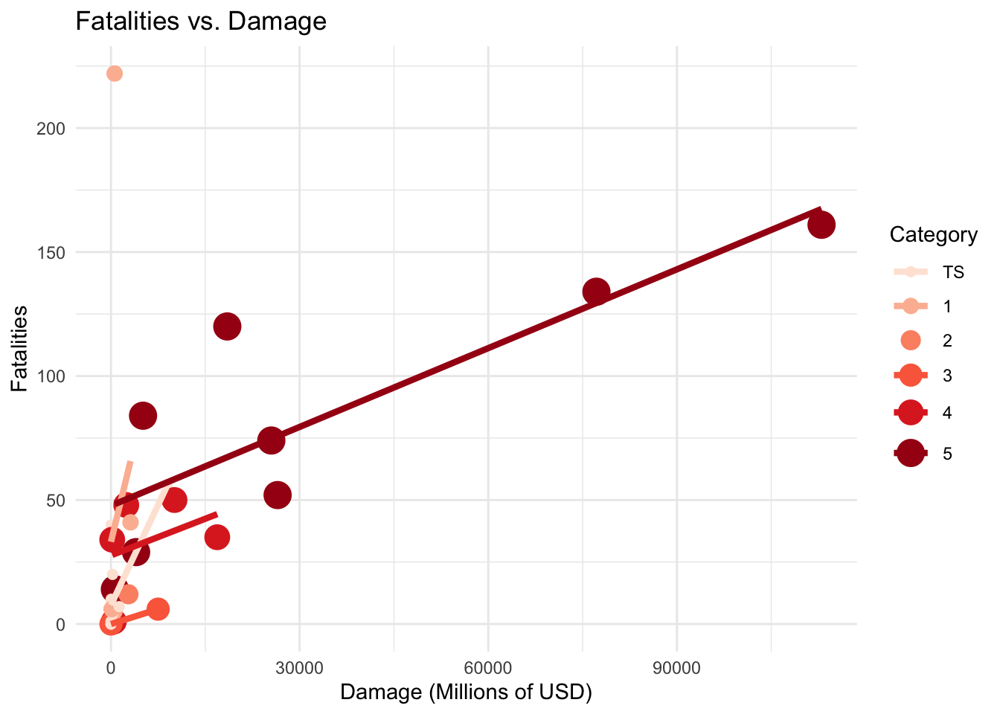
# Damage over time
ggplot(florida_hurricanes, aes(x = year, y = damage_mil, size = factor(category, levels = c("TS", "Category 1", "Category 2", "Category 3", "Category 4", "Category 5"), labels = c("TS", "1", "2", "3", "4", "5")), color = factor(category, levels = c("TS", "Category 1", "Category 2", "Category 3", "Category 4", "Category 5"), labels = c("TS", "1", "2", "3", "4", "5")))) +
geom_point() +
labs(x = "Year",
y = "Damage (Millions of USD)",
title = "Damage (by Category) over Time",
size = "Category",
color = "Category") +
geom_smooth(method = "lm", se = FALSE, linewidth = 0.5) +
#scale_color_manual(values = c("red", "orange", "yellow", "green", "blue", "purple")) +
scale_color_brewer(palette = "Reds") +
theme_minimal()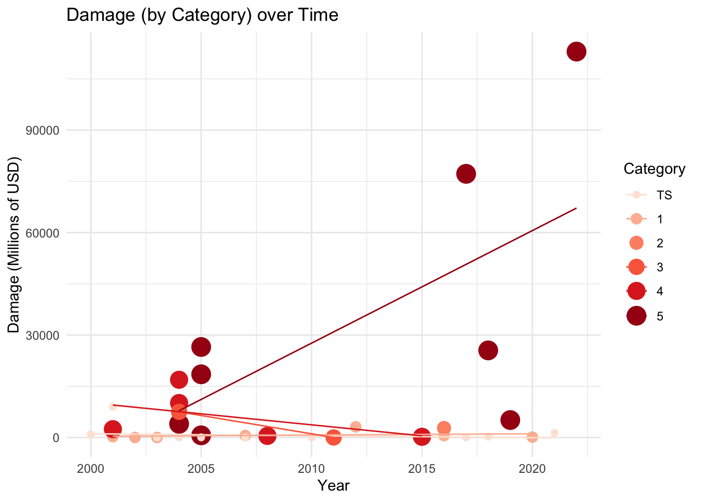
This is potentially influenced by inflation or direct landfall on multiple locations.
# Frequency of categories over time
florida_hurricanes %>%
group_by(year) %>%
select(category) %>%
mutate(frequency = n()) %>%
ggplot(aes(x = year,
y = frequency,
color = factor(category, levels = c("TS", "Category 1", "Category 2", "Category 3", "Category 4", "Category 5"), labels = c("TS", "1", "2", "3", "4", "5")),
size = factor(category, levels = c("TS", "Category 1", "Category 2", "Category 3", "Category 4", "Category 5"), labels = c("TS", "1", "2", "3", "4", "5")))) +
geom_point() +
labs(x = "Year",
y = "Frequency",
title = "Frequency of Categories over Time",
color = "Category",
size = "Category") +
scale_color_brewer(palette = "Reds") +
geom_smooth(method = "lm", se = FALSE, linewidth = 0.5) +
theme_minimal()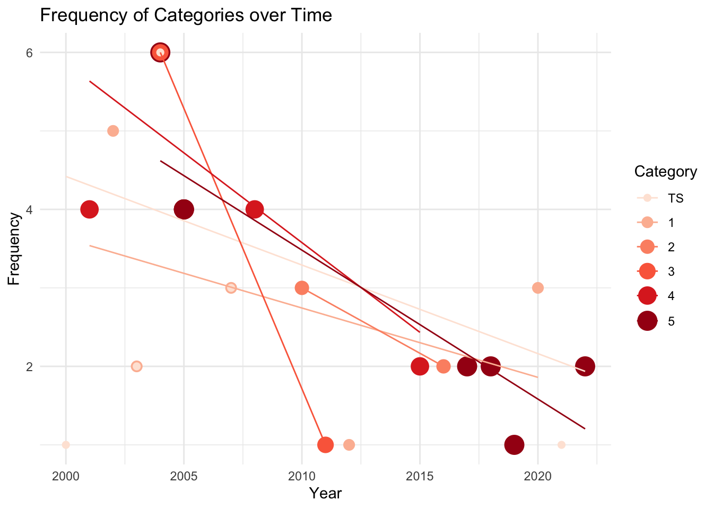
ggplot(florida_hurricanes, aes(x = category)) +
geom_bar()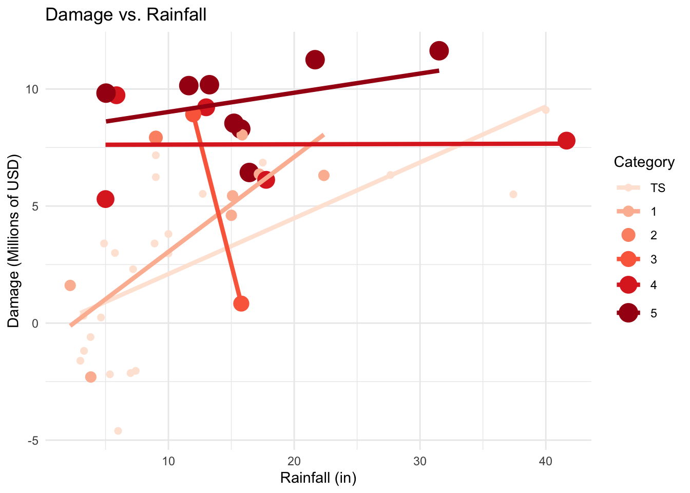
# florida_hurricanes %>%
# group_by(year) %>%
# select(category) %>%
# mutate(frequency = n()) %>%
# ggplot(aes(x = year, color = factor(category, levels = c("TS", "Category 1", "Category 2", "Category 3", "Category 4", "Category 5"), labels = c("TS", "1", "2", "3", "4", "5")))) +
# geom_point() +
# labs(x = "Year",
# y = "Frequency",
# title = "Frequency of Categories over Time",
# color = "Category") +
# scale_color_brewer(palette = "Reds") +
# geom_smooth(method = "lm", se = FALSE, linewidth = 0.5) +
# theme_minimal()# Frequency over time
# ggplot(florida_hurricanes, aes(x = year, y = damage_mil, size = factor(category, levels = c("TS", "Category 1", "Category 2", "Category 3", "Category 4", "Category 5"), labels = c("TS", "1", "2", "3", "4", "5")), color = factor(category, levels = c("TS", "Category 1", "Category 2", "Category 3", "Category 4", "Category 5"), labels = c("TS", "1", "2", "3", "4", "5")))) +
# geom_bar() +
# labs(x = "Year",
# y = "Damage (Millions of USD)",
# title = "Damage (by Category) over Time",
# size = "Category",
# color = "Category") +
# #geom_smooth(method = "lm", se = FALSE, linewidth = 0.5) +
# #scale_color_manual(values = c("red", "orange", "yellow", "green", "blue", "purple")) +
# scale_color_brewer(palette = "Reds") +
# theme_minimal()ggplot(florida_hurricanes, aes(x = factor(category, levels = c("TS", "Category 1", "Category 2", "Category 3", "Category 4", "Category 5"), labels = c("TS", "1", "2", "3", "4", "5")), y = highest_wind_speed)) +
geom_point() +
labs(x = "Category",
y = "Wind Speed",
title = "") +
#scale_color_brewer(palette = "Reds") +
geom_smooth(method = "lm", se = FALSE, linewidth = 0.5)